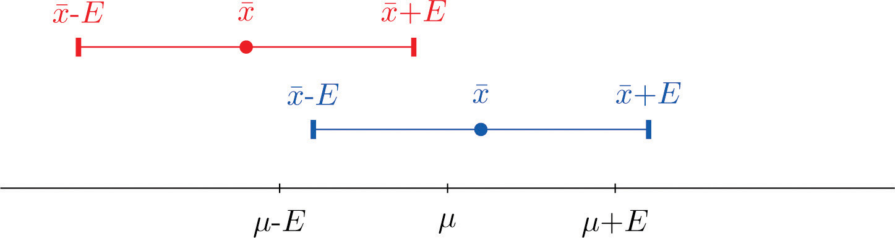
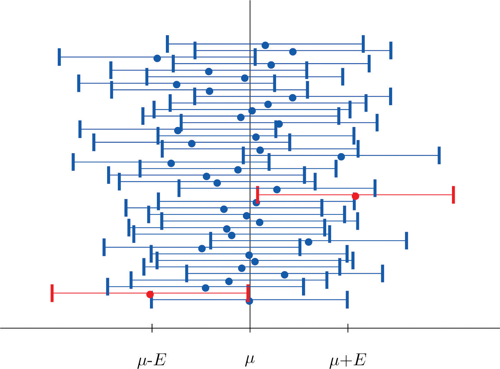
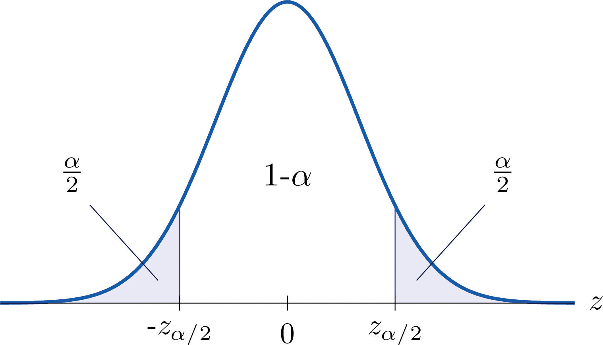
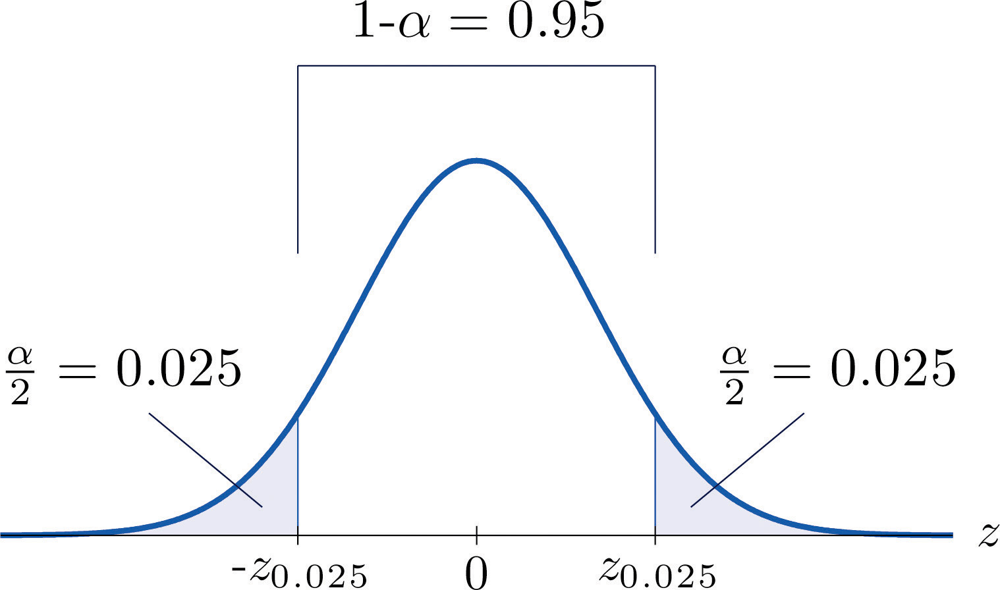
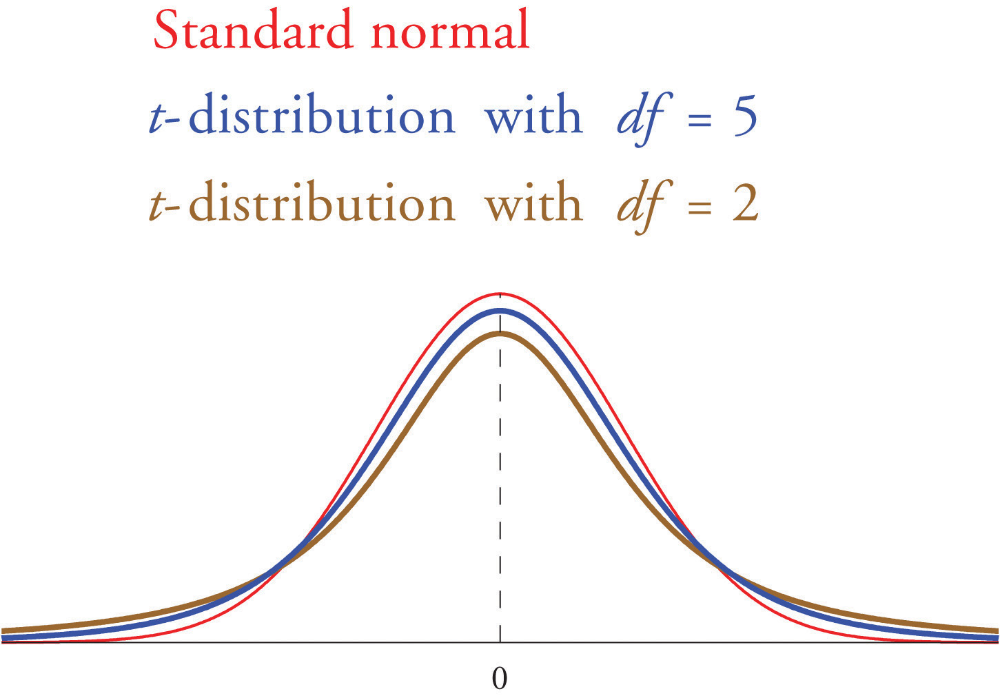

If we wish to estimate the mean μ of a population for which a census is impractical, say the average height of all 18-year-old men in the country, a reasonable strategy is to take a sample, compute its mean , and estimate the unknown number μ by the known number For example, if the average height of 100 randomly selected men aged 18 is 70.6 inches, then we would say that the average height of all 18-year-old men is (at least approximately) 70.6 inches.
Estimating a population parameter by a single number like this is called point estimation; in the case at hand the statistic is a point estimate of the parameter μ. The terminology arises because a single number corresponds to a single point on the number line.
A problem with a point estimate is that it gives no indication of how reliable the estimate is. In contrast, in this chapter we learn about interval estimation. In brief, in the case of estimating a population mean μ we use a formula to compute from the data a number E, called the margin of errorE, the number added to and subtracted from the point estimate to produce the interval estimate. of the estimate, and form the interval We do this in such a way that a certain proportion, say 95%, of all the intervals constructed from sample data by means of this formula contain the unknown parameter μ. Such an interval is called a 95% confidence intervalAn interval with endpoints , computed from the sample data in such a way that a specified proportion of all intervals constructed by this process will contain the parameter of interest. for μ.
Continuing with the example of the average height of 18-year-old men, suppose that the sample of 100 men mentioned above for which inches also had sample standard deviation s = 1.7 inches. It then turns out that E = 0.33 and we would state that we are 95% confident that the average height of all 18-year-old men is in the interval formed by inches, that is, the average is between 70.27 and 70.93 inches. If the sample statistics had come from a smaller sample, say a sample of 50 men, the lower reliability would show up in the 95% confidence interval being longer, hence less precise in its estimate. In this example the 95% confidence interval for the same sample statistics but with n = 50 is inches, or from 70.13 to 71.07 inches.
The Central Limit Theorem says that, for large samples (samples of size n ≥ 30), when viewed as a random variable the sample mean is normally distributed with mean and standard deviation The Empirical Rule says that we must go about two standard deviations from the mean to capture 95% of the values of generated by sample after sample. A more precise distance based on the normality of is 1.960 standard deviations, which is
The key idea in the construction of the 95% confidence interval is this, as illustrated in Figure 7.1 "When Winged Dots Capture the Population Mean": because in sample after sample 95% of the values of lie in the interval , if we adjoin to each side of the point estimate a “wing” of length E, 95% of the intervals formed by the winged dots contain μ. The 95% confidence interval is thus For a different level of confidenceThe proportion of confidence intervals which, if under repeated random sampling were always constructed according to the formula of the text, would contain the parameter of interest., say 90% or 99%, the number 1.960 will change, but the idea is the same.
Figure 7.1 When Winged Dots Capture the Population Mean
Figure 7.2 "Computer Simulation of 40 95% Confidence Intervals for a Mean" shows the intervals generated by a computer simulation of drawing 40 samples from a normally distributed population and constructing the 95% confidence interval for each one. We expect that about of the intervals so constructed would fail to contain the population mean μ, and in this simulation two of the intervals, shown in red, do.
Figure 7.2 Computer Simulation of 40 95% Confidence Intervals for a Mean
It is standard practice to identify the level of confidence in terms of the area in the two tails of the distribution of when the middle part specified by the level of confidence is taken out. This is shown in Figure 7.3, drawn for the general situation, and in Figure 7.4, drawn for 95% confidence. Remember from Section 5.4.1 "Tails of the Standard Normal Distribution" in Chapter 5 "Continuous Random Variables" that the z-value that cuts off a right tail of area c is denoted zc. Thus the number 1.960 in the example is , which is for
Figure 7.3
For % confidence the area in each tail is
Figure 7.4
For 95% confidence the area in each tail is
The level of confidence can be any number between 0 and 100%, but the most common values are probably 90% (), 95% (), and 99% ().
Thus in general for a % confidence interval, , so the formula for the confidence interval is While sometimes the population standard deviation σ is known, typically it is not. If not, for n ≥ 30 it is generally safe to approximate σ by the sample standard deviation s.
If σ is known:
If σ is unknown:
A sample is considered large when n ≥ 30.
As mentioned earlier, the number or is called the margin of error of the estimate.
Find the number needed in construction of a confidence interval:
Solution:
Use Figure 12.3 "Critical Values of " to find the number needed in construction of a confidence interval:
Solution:
Figure 12.3 "Critical Values of " can be used to find zc only for those values of c for which there is a column with the heading tc appearing in the table; otherwise we must use Figure 12.2 "Cumulative Normal Probability" in reverse. But when it can be done it is both faster and more accurate to use the last line of Figure 12.3 "Critical Values of " to find zc than it is to do so using Figure 12.2 "Cumulative Normal Probability" in reverse.
A sample of size 49 has sample mean 35 and sample standard deviation 14. Construct a 98% confidence interval for the population mean using this information. Interpret its meaning.
Solution:
For confidence level 98%, , so From Figure 12.3 "Critical Values of " we read directly that Thus
We are 98% confident that the population mean μ lies in the interval , in the sense that in repeated sampling 98% of all intervals constructed from the sample data in this manner will contain μ.
A random sample of 120 students from a large university yields mean GPA 2.71 with sample standard deviation 0.51. Construct a 90% confidence interval for the mean GPA of all students at the university.
Solution:
For confidence level 90%, , so From Figure 12.3 "Critical Values of " we read directly that Since n = 120, , and s = 0.51,
One may be 90% confident that the true average GPA of all students at the university is contained in the interval
A random sample is drawn from a population of known standard deviation 11.3. Construct a 90% confidence interval for the population mean based on the information given (not all of the information given need be used).
A random sample is drawn from a population of known standard deviation 22.1. Construct a 95% confidence interval for the population mean based on the information given (not all of the information given need be used).
A random sample is drawn from a population of unknown standard deviation. Construct a 99% confidence interval for the population mean based on the information given.
A random sample is drawn from a population of unknown standard deviation. Construct a 98% confidence interval for the population mean based on the information given.
A random sample of size 144 is drawn from a population whose distribution, mean, and standard deviation are all unknown. The summary statistics are and s = 2.6.
A random sample of size 256 is drawn from a population whose distribution, mean, and standard deviation are all unknown. The summary statistics are and s = 34.
A government agency was charged by the legislature with estimating the length of time it takes citizens to fill out various forms. Two hundred randomly selected adults were timed as they filled out a particular form. The times required had mean 12.8 minutes with standard deviation 1.7 minutes. Construct a 90% confidence interval for the mean time taken for all adults to fill out this form.
Four hundred randomly selected working adults in a certain state, including those who worked at home, were asked the distance from their home to their workplace. The average distance was 8.84 miles with standard deviation 2.70 miles. Construct a 99% confidence interval for the mean distance from home to work for all residents of this state.
On every passenger vehicle that it tests an automotive magazine measures, at true speed 55 mph, the difference between the true speed of the vehicle and the speed indicated by the speedometer. For 36 vehicles tested the mean difference was −1.2 mph with standard deviation 0.2 mph. Construct a 90% confidence interval for the mean difference between true speed and indicated speed for all vehicles.
A corporation monitors time spent by office workers browsing the web on their computers instead of working. In a sample of computer records of 50 workers, the average amount of time spent browsing in an eight-hour work day was 27.8 minutes with standard deviation 8.2 minutes. Construct a 99.5% confidence interval for the mean time spent by all office workers in browsing the web in an eight-hour day.
A sample of 250 workers aged 16 and older produced an average length of time with the current employer (“job tenure”) of 4.4 years with standard deviation 3.8 years. Construct a 99.9% confidence interval for the mean job tenure of all workers aged 16 or older.
The amount of a particular biochemical substance related to bone breakdown was measured in 30 healthy women. The sample mean and standard deviation were 3.3 nanograms per milliliter (ng/mL) and 1.4 ng/mL. Construct an 80% confidence interval for the mean level of this substance in all healthy women.
A corporation that owns apartment complexes wishes to estimate the average length of time residents remain in the same apartment before moving out. A sample of 150 rental contracts gave a mean length of occupancy of 3.7 years with standard deviation 1.2 years. Construct a 95% confidence interval for the mean length of occupancy of apartments owned by this corporation.
The designer of a garbage truck that lifts roll-out containers must estimate the mean weight the truck will lift at each collection point. A random sample of 325 containers of garbage on current collection routes yielded lb, s = 12.8 lb. Construct a 99.8% confidence interval for the mean weight the trucks must lift each time.
In order to estimate the mean amount of damage sustained by vehicles when a deer is struck, an insurance company examined the records of 50 such occurrences, and obtained a sample mean of $2,785 with sample standard deviation $221. Construct a 95% confidence interval for the mean amount of damage in all such accidents.
In order to estimate the mean FICO credit score of its members, a credit union samples the scores of 95 members, and obtains a sample mean of 738.2 with sample standard deviation 64.2. Construct a 99% confidence interval for the mean FICO score of all of its members.
For all settings a packing machine delivers a precise amount of liquid; the amount dispensed always has standard deviation 0.07 ounce. To calibrate the machine its setting is fixed and it is operated 50 times. The mean amount delivered is 6.02 ounces with sample standard deviation 0.04 ounce. Construct a 99.5% confidence interval for the mean amount delivered at this setting. Hint: Not all the information provided is needed.
A power wrench used on an assembly line applies a precise, preset amount of torque; the torque applied has standard deviation 0.73 foot-pound at every torque setting. To check that the wrench is operating within specifications it is used to tighten 100 fasteners. The mean torque applied is 36.95 foot-pounds with sample standard deviation 0.62 foot-pound. Construct a 99.9% confidence interval for the mean amount of torque applied by the wrench at this setting. Hint: Not all the information provided is needed.
The number of trips to a grocery store per week was recorded for a randomly selected collection of households, with the results shown in the table.
Construct a 95% confidence interval for the average number of trips to a grocery store per week of all households.
For each of 40 high school students in one county the number of days absent from school in the previous year were counted, with the results shown in the frequency table.
Construct a 90% confidence interval for the average number of days absent from school of all students in the county.
A town council commissioned a random sample of 85 households to estimate the number of four-wheel vehicles per household in the town. The results are shown in the following frequency table.
Construct a 98% confidence interval for the average number of four-wheel vehicles per household in the town.
The number of hours per day that a television set was operating was recorded for a randomly selected collection of households, with the results shown in the table.
Construct a 99.8% confidence interval for the mean number of hours that a television set is in operation in all households.
Large Data Set 1 records the SAT scores of 1,000 students. Regarding it as a random sample of all high school students, use it to construct a 99% confidence interval for the mean SAT score of all students.
http://www.gone.2012books.lardbucket.org/sites/all/files/data1.xls
Large Data Set 1 records the GPAs of 1,000 college students. Regarding it as a random sample of all college students, use it to construct a 95% confidence interval for the mean GPA of all students.
http://www.gone.2012books.lardbucket.org/sites/all/files/data1.xls
Large Data Set 1 lists the SAT scores of 1,000 students.
http://www.gone.2012books.lardbucket.org/sites/all/files/data1.xls
Large Data Set 1 lists the GPAs of 1,000 students.
http://www.gone.2012books.lardbucket.org/sites/all/files/data1.xls
The confidence interval formulas in the previous section are based on the Central Limit Theorem, the statement that for large samples is normally distributed with mean μ and standard deviation When the population mean μ is estimated with a small sample (n < 30), the Central Limit Theorem does not apply. In order to proceed we assume that the numerical population from which the sample is taken has a normal distribution to begin with. If this condition is satisfied then when the population standard deviation σ is known the old formula can still be used to construct a % confidence interval for μ.
If the population standard deviation is unknown and the sample size n is small then when we substitute the sample standard deviation s for σ the normal approximation is no longer valid. The solution is to use a different distribution, called Student’s t-distributionA distribution of a continuous random variable that resembles that standard normal distribution but has heavier tails. with degrees of freedomA number that specifies a particular t-distribution and that is computed based on the sample size.. Student’s t-distribution is very much like the standard normal distribution in that it is centered at 0 and has the same qualitative bell shape, but it has heavier tails than the standard normal distribution does, as indicated by Figure 7.5 "Student’s ", in which the curve (in brown) that meets the dashed vertical line at the lowest point is the t-distribution with two degrees of freedom, the next curve (in blue) is the t-distribution with five degrees of freedom, and the thin curve (in red) is the standard normal distribution. As also indicated by the figure, as the sample size n increases, Student’s t-distribution ever more closely resembles the standard normal distribution. Although there is a different t-distribution for every value of n, once the sample size is 30 or more it is typically acceptable to use the standard normal distribution instead, as we will always do in this text.
Figure 7.5 Student’s t-Distribution
Just as the symbol zc stands for the value that cuts off a right tail of area c in the standard normal distribution, so the symbol tc stands for the value that cuts off a right tail of area c in the standard normal distribution. This gives us the following confidence interval formulas.
If σ is known:
If σ is unknown: (degrees of freedom )
The population must be normally distributed.
A sample is considered small when n < 30.
To use the new formula we use the line in Figure 12.3 "Critical Values of " that corresponds to the relevant sample size.
A sample of size 15 drawn from a normally distributed population has sample mean 35 and sample standard deviation 14. Construct a 95% confidence interval for the population mean, and interpret its meaning.
Solution:
Since the population is normally distributed, the sample is small, and the population standard deviation is unknown, the formula that applies is
Confidence level 95% means that so Since the sample size is n = 15, there are degrees of freedom. By Figure 12.3 "Critical Values of " Thus
One may be 95% confident that the true value of μ is contained in the interval
A random sample of 12 students from a large university yields mean GPA 2.71 with sample standard deviation 0.51. Construct a 90% confidence interval for the mean GPA of all students at the university. Assume that the numerical population of GPAs from which the sample is taken has a normal distribution.
Solution:
Since the population is normally distributed, the sample is small, and the population standard deviation is unknown, the formula that applies is
Confidence level 90% means that so Since the sample size is n = 12, there are degrees of freedom. By Figure 12.3 "Critical Values of " Thus
One may be 90% confident that the true average GPA of all students at the university is contained in the interval
Compare Note 7.9 "Example 4" in Section 7.1 "Large Sample Estimation of a Population Mean" and Note 7.16 "Example 6". The summary statistics in the two samples are the same, but the 90% confidence interval for the average GPA of all students at the university in Note 7.9 "Example 4" in Section 7.1 "Large Sample Estimation of a Population Mean", , is shorter than the 90% confidence interval , in Note 7.16 "Example 6". This is partly because in Note 7.9 "Example 4" the sample size is larger; there is more information pertaining to the true value of μ in the large data set than in the small one.
A random sample is drawn from a normally distributed population of known standard deviation 5. Construct a 99.8% confidence interval for the population mean based on the information given (not all of the information given need be used).
A random sample is drawn from a normally distributed population of known standard deviation 10.7. Construct a 95% confidence interval for the population mean based on the information given (not all of the information given need be used).
A random sample is drawn from a normally distributed population of unknown standard deviation. Construct a 99% confidence interval for the population mean based on the information given.
A random sample is drawn from a normally distributed population of unknown standard deviation. Construct a 98% confidence interval for the population mean based on the information given.
A random sample of size 14 is drawn from a normal population. The summary statistics are and s = 18.
A random sample of size 28 is drawn from a normal population. The summary statistics are and s = 1.28.
City planners wish to estimate the mean lifetime of the most commonly planted trees in urban settings. A sample of 16 recently felled trees yielded mean age 32.7 years with standard deviation 3.1 years. Assuming the lifetimes of all such trees are normally distributed, construct a 99.8% confidence interval for the mean lifetime of all such trees.
To estimate the number of calories in a cup of diced chicken breast meat, the number of calories in a sample of four separate cups of meat is measured. The sample mean is 211.8 calories with sample standard deviation 0.9 calorie. Assuming the caloric content of all such chicken meat is normally distributed, construct a 95% confidence interval for the mean number of calories in one cup of meat.
A college athletic program wishes to estimate the average increase in the total weight an athlete can lift in three different lifts after following a particular training program for six weeks. Twenty-five randomly selected athletes when placed on the program exhibited a mean gain of 47.3 lb with standard deviation 6.4 lb. Construct a 90% confidence interval for the mean increase in lifting capacity all athletes would experience if placed on the training program. Assume increases among all athletes are normally distributed.
To test a new tread design with respect to stopping distance, a tire manufacturer manufactures a set of prototype tires and measures the stopping distance from 70 mph on a standard test car. A sample of 25 stopping distances yielded a sample mean 173 feet with sample standard deviation 8 feet. Construct a 98% confidence interval for the mean stopping distance for these tires. Assume a normal distribution of stopping distances.
A manufacturer of chokes for shotguns tests a choke by shooting 15 patterns at targets 40 yards away with a specified load of shot. The mean number of shot in a 30-inch circle is 53.5 with standard deviation 1.6. Construct an 80% confidence interval for the mean number of shot in a 30-inch circle at 40 yards for this choke with the specified load. Assume a normal distribution of the number of shot in a 30-inch circle at 40 yards for this choke.
In order to estimate the speaking vocabulary of three-year-old children in a particular socioeconomic class, a sociologist studies the speech of four children. The mean and standard deviation of the sample are and s = 215 words. Assuming that speaking vocabularies are normally distributed, construct an 80% confidence interval for the mean speaking vocabulary of all three-year-old children in this socioeconomic group.
A thread manufacturer tests a sample of eight lengths of a certain type of thread made of blended materials and obtains a mean tensile strength of 8.2 lb with standard deviation 0.06 lb. Assuming tensile strengths are normally distributed, construct a 90% confidence interval for the mean tensile strength of this thread.
An airline wishes to estimate the weight of the paint on a fully painted aircraft of the type it flies. In a sample of four repaintings the average weight of the paint applied was 239 pounds, with sample standard deviation 8 pounds. Assuming that weights of paint on aircraft are normally distributed, construct a 99.8% confidence interval for the mean weight of paint on all such aircraft.
In a study of dummy foal syndrome, the average time between birth and onset of noticeable symptoms in a sample of six foals was 18.6 hours, with standard deviation 1.7 hours. Assuming that the time to onset of symptoms in all foals is normally distributed, construct a 90% confidence interval for the mean time between birth and onset of noticeable symptoms.
A sample of 26 women’s size 6 dresses had mean waist measurement 25.25 inches with sample standard deviation 0.375 inch. Construct a 95% confidence interval for the mean waist measurement of all size 6 women’s dresses. Assume waist measurements are normally distributed.
Botanists studying attrition among saplings in new growth areas of forests diligently counted stems in six plots in five-year-old new growth areas, obtaining the following counts of stems per acre:
Construct an 80% confidence interval for the mean number of stems per acre in all five-year-old new growth areas of forests. Assume that the number of stems per acre is normally distributed.
Nutritionists are investigating the efficacy of a diet plan designed to increase the caloric intake of elderly people. The increase in daily caloric intake in 12 individuals who are put on the plan is (a minus sign signifies that calories consumed went down):
Construct a 99.8% confidence interval for the mean increase in caloric intake for all people who are put on this diet. Assume that population of differences in intake is normally distributed.
A machine for making precision cuts in dimension lumber produces studs with lengths that vary with standard deviation 0.003 inch. Five trial cuts are made to check the machine’s calibration. The mean length of the studs produced is 104.998 inches with sample standard deviation 0.004 inch. Construct a 99.5% confidence interval for the mean lengths of all studs cut by this machine. Assume lengths are normally distributed. Hint: Not all the numbers given in the problem are used.
The variation in time for a baked good to go through a conveyor oven at a large scale bakery has standard deviation 0.017 minute at every time setting. To check the bake time of the oven periodically four batches of goods are carefully timed. The recent check gave a mean of 27.2 minutes with sample standard deviation 0.012 minute. Construct a 99.8% confidence interval for the mean bake time of all batches baked in this oven. Assume bake times are normally distributed. Hint: Not all the numbers given in the problem are used.
Wildlife researchers tranquilized and weighed three adult male polar bears. The data (in pounds) are: 926, 742, 1,109. Assume the weights of all bears are normally distributed.
Wildlife researchers trapped and measured six adult male collared lemmings. The data (in millimeters) are: 104, 99, 112, 115, 96, 109. Assume the lengths of all lemmings are normally distributed.
Since from Section 6.3 "The Sample Proportion" in Chapter 6 "Sampling Distributions" we know the mean, standard deviation, and sampling distribution of the sample proportion , the ideas of the previous two sections can be applied to produce a confidence interval for a population proportion. Here is the formula.
A sample is large if the interval lies wholly within the interval
In actual practice the value of p is not known, hence neither is In that case we substitute the known quantity for p in making the check; this means checking that the interval
lies wholly within the interval
To estimate the proportion of students at a large college who are female, a random sample of 120 students is selected. There are 69 female students in the sample. Construct a 90% confidence interval for the proportion of all students at the college who are female.
Solution:
The proportion of students in the sample who are female is
Confidence level 90% means that so From the last line of Figure 12.3 "Critical Values of " we obtain
Thus
One may be 90% confident that the true proportion of all students at the college who are female is contained in the interval
Information about a random sample is given. Verify that the sample is large enough to use it to construct a confidence interval for the population proportion. Then construct a 90% confidence interval for the population proportion.
Information about a random sample is given. Verify that the sample is large enough to use it to construct a confidence interval for the population proportion. Then construct a 95% confidence interval for the population proportion.
Information about a random sample is given. Verify that the sample is large enough to use it to construct a confidence interval for the population proportion. Then construct a 98% confidence interval for the population proportion.
Information about a random sample is given. Verify that the sample is large enough to use it to construct a confidence interval for the population proportion. Then construct a 99.5% confidence interval for the population proportion.
In a random sample of size 1,100, 338 have the characteristic of interest.
In a random sample of size 2,400, 420 have the characteristic of interest.
A security feature on some web pages is graphic representations of words that are readable by human beings but not machines. When a certain design format was tested on 450 subjects, by having them attempt to read ten disguised words, 448 subjects could read all the words.
In a random sample of 900 adults, 42 defined themselves as vegetarians.
In a random sample of 250 employed people, 61 said that they bring work home with them at least occasionally.
In a random sample of 1,250 household moves, 822 were moves to a location within the same county as the original residence.
In a random sample of 12,447 hip replacement or revision surgery procedures nationwide, 162 patients developed a surgical site infection.
In a certain region prepackaged products labeled 500 g must contain on average at least 500 grams of the product, and at least 90% of all packages must weigh at least 490 grams. In a random sample of 300 packages, 288 weighed at least 490 grams.
A survey of 50 randomly selected adults in a small town asked them if their opinion on a proposed “no cruising” restriction late at night. Responses were coded 1 for in favor, 0 for indifferent, and 2 for opposed, with the results shown in the table.
To try to understand the reason for returned goods, the manager of a store examines the records on 40 products that were returned in the last year. Reasons were coded by 1 for “defective,” 2 for “unsatisfactory,” and 0 for all other reasons, with the results shown in the table.
In order to estimate the proportion of entering students who graduate within six years, the administration at a state university examined the records of 600 randomly selected students who entered the university six years ago, and found that 312 had graduated.
In a random sample of 2,300 mortgages taken out in a certain region last year, 187 were adjustable-rate mortgages.
In a research study in cattle breeding, 159 of 273 cows in several herds that were in estrus were detected by means of an intensive once a day, one-hour observation of the herds in early morning.
A survey of 21,250 households concerning telephone service gave the results shown in the table.
| Landline | No Landline | |
|---|---|---|
| Cell phone | 12,474 | 5,844 |
| No cell phone | 2,529 | 403 |
In a random sample of 900 adults, 42 defined themselves as vegetarians. Of these 42, 29 were women.
A random sample of 185 college soccer players who had suffered injuries that resulted in loss of playing time was made with the results shown in the table. Injuries are classified according to severity of the injury and the condition under which it was sustained.
| Minor | Moderate | Serious | |
|---|---|---|---|
| Practice | 48 | 20 | 6 |
| Game | 62 | 32 | 17 |
The body mass index (BMI) was measured in 1,200 randomly selected adults, with the results shown in the table.
| BMI | |||
|---|---|---|---|
| Under 18.5 | 18.5–25 | Over 25 | |
| Men | 36 | 165 | 315 |
| Women | 75 | 274 | 335 |
Confidence intervals constructed using the formula in this section often do not do as well as expected unless n is quite large, especially when the true population proportion is close to either 0 or 1. In such cases a better result is obtained by adding two successes and two failures to the actual data and then computing the confidence interval. This is the same as using the formula
Suppose that in a random sample of 600 households, 12 had no telephone service of any kind. Use the adjusted confidence interval procedure just described to form a 99.9% confidence interval for the proportion of all households that have no telephone service of any kind.
Large Data Sets 4 and 4A list the results of 500 tosses of a die. Let p denote the proportion of all tosses of this die that would result in a four. Use the sample data to construct a 90% confidence interval for p.
http://www.gone.2012books.lardbucket.org/sites/all/files/data4.xls
http://www.gone.2012books.lardbucket.org/sites/all/files/data4A.xls
Large Data Set 6 records results of a random survey of 200 voters in each of two regions, in which they were asked to express whether they prefer Candidate A for a U.S. Senate seat or prefer some other candidate. Use the full data set (400 observations) to construct a 98% confidence interval for the proportion p of all voters who prefer Candidate A.
http://www.gone.2012books.lardbucket.org/sites/all/files/data6.xls
Lines 2 through 536 in Large Data Set 11 is a sample of 535 real estate sales in a certain region in 2008. Those that were foreclosure sales are identified with a 1 in the second column.
http://www.gone.2012books.lardbucket.org/sites/all/files/data11.xls
Lines 537 through 1106 in Large Data Set 11 is a sample of 570 real estate sales in a certain region in 2010. Those that were foreclosure sales are identified with a 1 in the second column.
http://www.gone.2012books.lardbucket.org/sites/all/files/data11.xls
and
and
Sampling is typically done with a set of clear objectives in mind. For example, an economist might wish to estimate the mean yearly income of workers in a particular industry at 90% confidence and to within $500. Since sampling costs time, effort, and money, it would be useful to be able to estimate the smallest size sample that is likely to meet these criteria.
The confidence interval formulas for estimating a population mean μ have the form When the population standard deviation σ is known,
The number is determined by the desired level of confidence. To say that we wish to estimate the mean to within a certain number of units means that we want the margin of error E to be no larger than that number. Thus we obtain the minimum sample size needed by solving the displayed equation for n.
The estimated minimum sample size n needed to estimate a population mean μ to within E units at % confidence is
To apply the formula we must have prior knowledge of the population in order to have an estimate of its standard deviation σ. In all the examples and exercises the population standard deviation will be given.
Find the minimum sample size necessary to construct a 99% confidence interval for μ with a margin of error E = 0.2. Assume that the population standard deviation is σ = 1.3.
Solution:
Confidence level 99% means that so From the last line of Figure 12.3 "Critical Values of " we obtain Thus
which we round up to 281, since it is impossible to take a fractional observation.
An economist wishes to estimate, with a 95% confidence interval, the yearly income of welders with at least five years experience to within $1,000. He estimates that the range of incomes is no more than $24,000, so using the Empirical Rule he estimates the population standard deviation to be about one-sixth as much, or about $4,000. Find the estimated minimum sample size required.
Solution:
Confidence level 95% means that so From the last line of Figure 12.3 "Critical Values of " we obtain
To say that the estimate is to be “to within $1,000” means that E = 1000. Thus
which we round up to 62.
The confidence interval formula for estimating a population proportion p is , where
The number is determined by the desired level of confidence. To say that we wish to estimate the population proportion to within a certain number of percentage points means that we want the margin of error E to be no larger than that number (expressed as a proportion). Thus we obtain the minimum sample size needed by solving the displayed equation for n.
The estimated minimum sample size n needed to estimate a population proportion p to within E at % confidence is
There is a dilemma here: the formula for estimating how large a sample to take contains the number , which we know only after we have taken the sample. There are two ways out of this dilemma. Typically the researcher will have some idea as to the value of the population proportion p, hence of what the sample proportion is likely to be. For example, if last month 37% of all voters thought that state taxes are too high, then it is likely that the proportion with that opinion this month will not be dramatically different, and we would use the value 0.37 for in the formula.
The second approach to resolving the dilemma is simply to replace in the formula by 0.5. This is because if is large then is small, and vice versa, which limits their product to a maximum value of 0.25, which occurs when This is called the most conservative estimateThe estimate obtained using , which gives the largest estimate of n., since it gives the largest possible estimate of n.
Find the necessary minimum sample size to construct a 98% confidence interval for p with a margin of error E = 0.05,
Solution:
Confidence level 98% means that so From the last line of Figure 12.3 "Critical Values of " we obtain
Since there is no prior knowledge of p we make the most conservative estimate that Then
which we round up to 542.
Since p ≈ 0.1 we estimate by 0.1, and obtain
which we round up to 195.
A dermatologist wishes to estimate the proportion of young adults who apply sunscreen regularly before going out in the sun in the summer. Find the minimum sample size required to estimate the proportion to within three percentage points, at 90% confidence.
Solution:
Confidence level 90% means that so From the last line of Figure 12.3 "Critical Values of " we obtain
Since there is no prior knowledge of p we make the most conservative estimate that To estimate “to within three percentage points” means that E = 0.03. Then
which we round up to 752.
Estimate the minimum sample size needed to form a confidence interval for the mean of a population having the standard deviation shown, meeting the criteria given.
Estimate the minimum sample size needed to form a confidence interval for the mean of a population having the standard deviation shown, meeting the criteria given.
Estimate the minimum sample size needed to form a confidence interval for the proportion of a population that has a particular characteristic, meeting the criteria given.
Estimate the minimum sample size needed to form a confidence interval for the proportion of a population that has a particular characteristic, meeting the criteria given.
Estimate the minimum sample size needed to form a confidence interval for the proportion of a population that has a particular characteristic, meeting the criteria given.
Estimate the minimum sample size needed to form a confidence interval for the proportion of a population that has a particular characteristic, meeting the criteria given.
A software engineer wishes to estimate, to within 5 seconds, the mean time that a new application takes to start up, with 95% confidence. Estimate the minimum size sample required if the standard deviation of start up times for similar software is 12 seconds.
A real estate agent wishes to estimate, to within $2.50, the mean retail cost per square foot of newly built homes, with 80% confidence. He estimates the standard deviation of such costs at $5.00. Estimate the minimum size sample required.
An economist wishes to estimate, to within 2 minutes, the mean time that employed persons spend commuting each day, with 95% confidence. On the assumption that the standard deviation of commuting times is 8 minutes, estimate the minimum size sample required.
A motor club wishes to estimate, to within 1 cent, the mean price of 1 gallon of regular gasoline in a certain region, with 98% confidence. Historically the variability of prices is measured by Estimate the minimum size sample required.
A bank wishes to estimate, to within $25, the mean average monthly balance in its checking accounts, with 99.8% confidence. Assuming , estimate the minimum size sample required.
A retailer wishes to estimate, to within 15 seconds, the mean duration of telephone orders taken at its call center, with 99.5% confidence. In the past the standard deviation of call length has been about 1.25 minutes. Estimate the minimum size sample required. (Be careful to express all the information in the same units.)
The administration at a college wishes to estimate, to within two percentage points, the proportion of all its entering freshmen who graduate within four years, with 90% confidence. Estimate the minimum size sample required.
A chain of automotive repair stores wishes to estimate, to within five percentage points, the proportion of all passenger vehicles in operation that are at least five years old, with 98% confidence. Estimate the minimum size sample required.
An internet service provider wishes to estimate, to within one percentage point, the current proportion of all email that is spam, with 99.9% confidence. Last year the proportion that was spam was 71%. Estimate the minimum size sample required.
An agronomist wishes to estimate, to within one percentage point, the proportion of a new variety of seed that will germinate when planted, with 95% confidence. A typical germination rate is 97%. Estimate the minimum size sample required.
A charitable organization wishes to estimate, to within half a percentage point, the proportion of all telephone solicitations to its donors that result in a gift, with 90% confidence. Estimate the minimum sample size required, using the information that in the past the response rate has been about 30%.
A government agency wishes to estimate the proportion of drivers aged 16–24 who have been involved in a traffic accident in the last year. It wishes to make the estimate to within one percentage point and at 90% confidence. Find the minimum sample size required, using the information that several years ago the proportion was 0.12.
An economist wishes to estimate, to within six months, the mean time between sales of existing homes, with 95% confidence. Estimate the minimum size sample required. In his experience virtually all houses are re-sold within 40 months, so using the Empirical Rule he will estimate σ by one-sixth the range, or
A wildlife manager wishes to estimate the mean length of fish in a large lake, to within one inch, with 80% confidence. Estimate the minimum size sample required. In his experience virtually no fish caught in the lake is over 23 inches long, so using the Empirical Rule he will estimate σ by one-sixth the range, or
You wish to estimate the current mean birth weight of all newborns in a certain region, to within 1 ounce (1/16 pound) and with 95% confidence. A sample will cost $400 plus $1.50 for every newborn weighed. You believe the standard deviations of weight to be no more than 1.25 pounds. You have $2,500 to spend on the study.
You wish to estimate a population proportion to within three percentage points, at 95% confidence. A sample will cost $500 plus 50 cents for every sample element measured. You have $1,000 to spend on the study.
23
62
955
1692
22,301
22,731
5